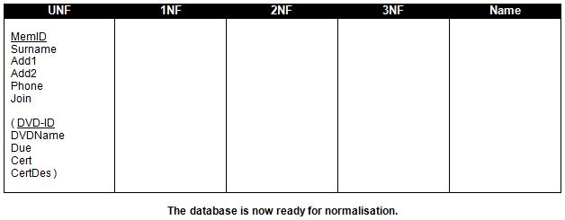

<div id="jsn-maincontent" class="span9 order1 row-fluid">
  <div id="jsn-maincontent_inner">
    <div id="jsn-centercol">
      <div id="jsn-centercol_inner">
        <div id="jsn-mainbody-content" class="jsn-hasmainbody">
          <div id="jsn-mainbody-content-inner1">
            <div id="jsn-mainbody-content-inner2">
              <div id="jsn-mainbody-content-inner3">
                <div id="jsn-mainbody-content-inner4" class="row-fluid">
                  <div id="jsn-mainbody-content-inner" class="span12 order1">
                    <div id="jsn-mainbody">
                      <div id="system-message-container"></div>

                      <div
                        class="item-page"
                        itemscope
                        itemtype="https://schema.org/Article"
                      >
                        <meta itemprop="inLanguage" content="en-GB" />

                        <div itemprop="articleBody">
                          <p>&nbsp;</p>
                          <h1 style="text-align: center">
                            UNF - Setting up the analysis table
                          </h1>
                          <p>
                            <strong>STEP 0 - Set up the Analysis Table.</strong
                            ><br />Before we begin, UNF stands for
                            'Un-normalised form'. In other words, it is your
                            database before you've normalised it. You may
                            sometimes see 0NF instead. It means the same thing.
                            There are a number of parts to this stage:
                          </p>
                          <ol style="list-style-type: lower-alpha">
                            <li style="list-style-type: none">
                              <ol style="list-style-type: lower-alpha">
                                <li>
                                  Get a piece of A4 paper and turn it around
                                  into landscape. Divide the paper into 5
                                  columns and put the following 5 headings at
                                  the top of each of the 5 columns: UNF, 1NF,
                                  2NF, 3NF and Name.
                                </li>
                                <li>
                                  Then list all the attributes in the first
                                  column, UNF. You may want to shorten each
                                  attribute name to reduce how much you have to
                                  write!
                                </li>
                                <li>
                                  Now for the first tricky bit! You need to
                                  identify any ‘repeating groups’ in the UNF
                                  column. If you look back at the example of a
                                  typical member's record, you can see that you
                                  would only enter the member's details once,
                                  but for each DVD, you would enter DVD-ID,
                                  DVDName, Due, Cert and CertDes. In other
                                  words, you may need to enter in these details
                                  many times - you will need to keep entering in
                                  these details for each DVD taken out. Groups
                                  of attributes that you have to keep entering
                                  in over and over again are known as a
                                  ‘repeating group’. To show this, you should
                                  put those attributes inside brackets.
                                </li>
                                <li>
                                  Finally, you need to identify a ‘primary key’
                                  for both the repeating group and the group of
                                  attributes that are only entered in once.
                                  Imagine any table full of records (and
                                  remember that each record is in a row in the
                                  table). The primary key is the attribute that
                                  is different, and will always be different,
                                  for every single record (every single row).
                                  Very often, the primary key is an ID number or
                                  a reference number. In the repeating group,
                                  the one attribute that will always be
                                  different in every record is the DVD-ID
                                  attribute. To show this is the primary key for
                                  that group of attributes, you underline it.
                                  You also need to underline the MemID attribute
                                  because that one is the primary key for the
                                  group of attributes that are only entered into
                                  the database once.
                                </li>
                              </ol>
                            </li>
                          </ol>
                          <p>
                            If you have done everything correctly, your Analysis
                            Table should look like this:
                          </p>
                          <p style="text-align: center">
                            
                          </p>
                          <p>
                            <span style="line-height: 1.5"
                              >Now you have made yourself a table and listed all
                              the attributes in the database and identified the
                              primary keys in all the groups, you are ready to
                              begin normalisation. The first step is put your
                              database into 'first normal form', or 1NF.</span
                            >
                          </p>
                          <p>&nbsp;</p>
                        </div>
                      </div>
                    </div>
                  </div>
                </div>
              </div>
            </div>
          </div>
        </div>
      </div>
    </div>
  </div>
</div>
